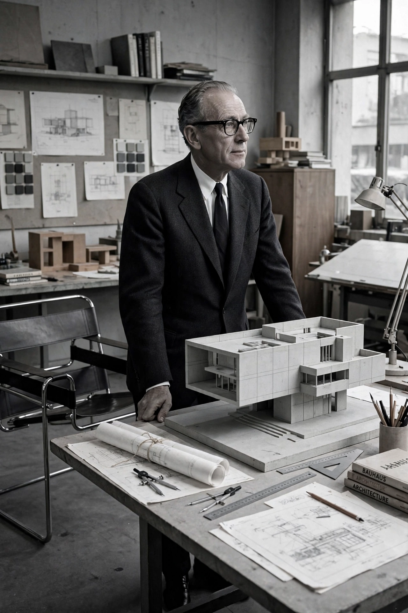

Marcel Lajos Breuer (21 May 1902 – 1 July 1981) was a Hungarian-born American architect and designer, a master of the Bauhaus and a pioneer of modernist design, famous for the Wassily Chair made from bent tubular steel.

| Born | 21 May 1902, Pécs, Hungary |
|---|---|
| Died | 1 July 1981, New York City, US |
| Movement | Bauhaus, Modernism, Brutalism |
Trained at the Bauhaus in Weimar, Breuer headed its carpentry workshop. Fleeing Nazi Germany, he taught at Harvard with Walter Gropius, then practised in New York. Works include the UNESCO Headquarters in Paris, the Whitney Museum (now Met Breuer) in New York, and St John's Abbey in Minnesota.
His 1925 Wassily Chair and Cesca chair revolutionised furniture using bicycle-inspired tubular steel and cane.